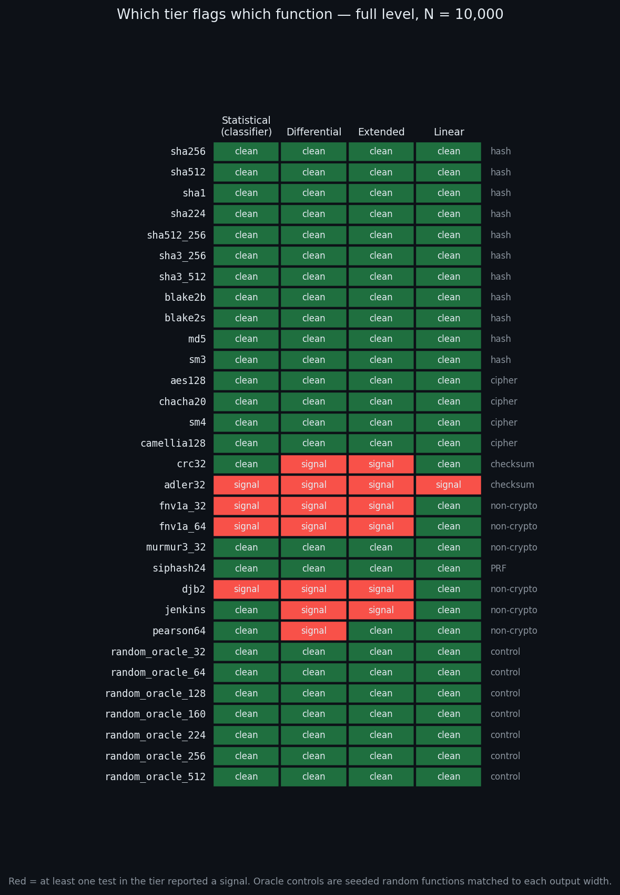
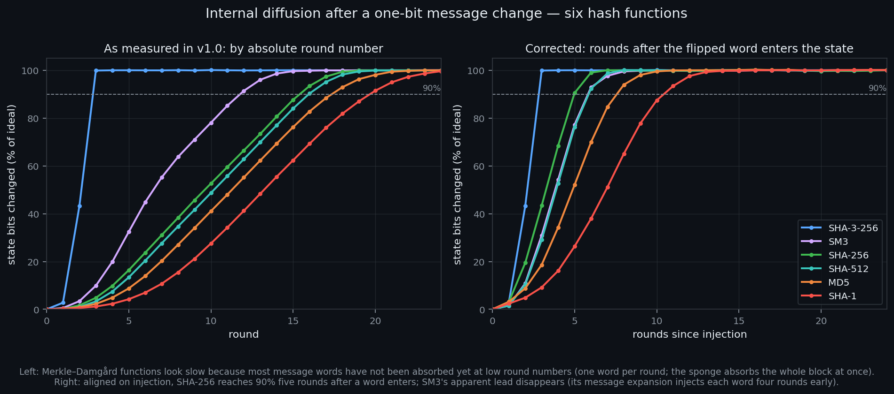

Black-box hash function assessment toolkit.
Statistical and differential tests for any function that returns a digest — and known-answer checks for implementations of the standard ones.
The question has two forms, and they need different tools. Is this function sound? — is its output statistically indistinguishable from random, and does it change the way an ideal function's would when the input changes? And is this implementation faithful? — is this HSM's, this firmware's, this vendor library's SHA-256 actually SHA-256?
For the first, cryptid treats the function as a black box and runs fourteen statistical, differential and structural tests in four tiers, so that a weakness invisible to one tier is visible to another. Anything that returns a digest can be tested — including hardware.
For the second, no statistical test will do: a SHA-256 with a typo in one round constant, or with 24 of its 64 rounds, is still a well-mixed function and passes every test in the battery. So cryptid also ships kat, a known-answer check against a trusted reference. The first version of this project blurred the two questions; the current one doesn't.
No single statistical test catches every weakness type. cryptid runs a layered battery: aggregate statistics on input/output records, differential tests on chosen inputs, structural tests for sequence and cycle behaviour, and an exhaustive low-weight linear-approximation search. In the chosen-input tiers the function is fed raw bytes, so a single-bit flip in the input is a single-bit flip in the hashed message.
Asks: "Does the output look random?" Every input bit against every output bit, plus byte-feature interactions, entropy, conditional frequency and permutation-tested mutual information. A logistic-regression classifier combines 20 normalized features into one probability. Trained on 288 synthetic variants; on 96 variants from unseen seeds it scores 100% accuracy with 0 false positives and 100% recall. The only tier that can run from a file of records.
Asks: "Does the output change randomly?" Empirical Strict Avalanche Criterion (every input bit × every output bit) and Bit Independence Criterion (every pair of output bits, including deterministic differentials). Catches CRC32 and Jenkins OAT — both of which pass the aggregate suite.
Asks: "Is there sequence, cycle or linear structure?" Near-collisions, counter-mode autocorrelation, Floyd cycle detection, and — in the spirit of Matsui's linear cryptanalysis — the bias of every 1-, 2- and 3-bit XOR combination of input bits against every output bit, about 25 million approximations for a 256-bit digest, evaluated as bitset operations in under a minute.
| Level | Tests Run | Time — SHA-256, 5K / 10K samples | Best For |
|---|---|---|---|
| quick | Statistical suite + classifier | ~2s / ~4s | CI/CD pipeline, every commit |
| standard | + Differential profile | ~7s / ~14s | Default — good coverage for most audits |
| full | + Extended + Linear approximation | ~49s / ~85s | Release gate, comprehensive audit |
Measured on a 2-vCPU Linux container (an Apple-silicon laptop is roughly 1.5× faster); 32-bit outputs are several times faster than 256-bit. Pure Python, no dependencies.
At 10,000 samples, all 15 cryptographic functions — including SHA-256, SHA-3, BLAKE2b, SM3 and the AES-128, SM4, Camellia and ChaCha20 constructions — are indistinguishable from their random-oracle controls on every test. 7 of the 7 non-cryptographic hashes designed without regard to avalanche or linearity are flagged; the two designed for quality are not. The full matrix, with every tier's result for every function, is below.
Jenkins one-at-a-time passes the aggregate suite (P = 0.05) and fails the differential profile: input bits in the final message byte flip some output bits far from half the time, and output-bit flips are not independent. This is a documented property — Wikipedia's article shows the same avalanche map, and SMHasher has long listed OAT as failing its avalanche and BIC tests — not a discovery of ours; the first version of this page called it "hidden" and blamed a missing final mixing pass that the function in fact has.
Its value is as a positive control: a weakness that output statistics cannot see and differential tests can. The cause is that a difference in the last byte passes through only one per-byte mix and a three-step finalizer before it becomes output.
CRC32's output distribution is uniform; the aggregate suite classifies it as clean (P = 0.04). But its XOR-linearity makes every single-bit differential deterministic — flip an input bit and the same output bits always flip — which the differential tier reports as constant flip columns, and consecutive counter-mode outputs are strongly correlated. Different tiers catch different categories of weakness.
With instrumented implementations of six hashes we flip one message bit and watch the difference spread through the internal state. Counted from the round the flipped word enters the state — the comparison the first version of this page got wrong — SHA-3 reaches full diffusion 3 rounds after absorbing the block, SHA-256 reaches 90% 5 rounds after injection, MD5 8, SHA-1 11. SM3's apparent early-round lead over SHA-256 in absolute round counts turns out to be its message expansion injecting each word four rounds early, not faster mixing. Diffusion rate describes a design; it does not rank security.
MurmurHash3 makes no cryptographic claim but was designed for avalanche quality; SipHash-2-4 is a keyed cryptographic PRF. Both are clean on all fourteen tests — indistinguishable from their random-oracle controls. Statistical quality is a design choice, not a by-product of complexity.
SHA-256 with a one-bit typo in round constant K[20]: P = 0.15, every differential test clean, PASS. SHA-256 with only 24 of its 64 rounds — below the best published practical collision attack — PASS. A hash that sorts its input bytes before hashing, so every anagram of a message collides: PASS. These are well-mixed functions with no statistical signature. For implementations, cryptid kat compares against a reference; for the rest, there is no substitute for cryptanalysis.
The classifier is calibrated on four planted-weakness families that share its own feature vocabulary, so accuracy on them proves little. Five further weaknesses were written after the detectors were frozen: a dead input byte, an input byte copied into the digest, an output byte copied from another, a permutation-invariant hash, and a three-bit linear leak. The battery catches 4 of 5 — and the one it misses, the permutation-invariant hash, is reported as a miss.
Both figures are generated by experiments/make_figures.py from the JSON in results/ — the same files the whitepaper's tables are built from. (The first version of this page showed charts made by an AI agent re-implementing the paper's method; they drew "acceptable thresholds" that SHA-256 itself exceeded, and have been retired.)


Pure Python standard library for everything except the four block-cipher constructions (pip install cryptography).
git clone https://github.com/r57-labs/cryptid.git && cd cryptid
python cryptid.py test -a sha256 -n 5000 --level quick
python cryptid.py test -i my_hashes.jsonl --level quick
python cryptid.py test --command "openssl dgst -sha256 -hex" -n 2000 --level standard
python cryptid.py kat -a sha256 --command "openssl dgst -sha256 -hex"
{"plaintext": "hello world", "hash": "b94d27b9934d3e08a52e52d7da7dabfac484efe37a5380ee9088f7ace2efcde9"}
One JSON object per line. Supports plaintext, input, or message as the input field; hash, output, or digest as the output field. The hashed message is the plaintext's UTF-8 bytes; every digest must be zero-padded to the hash's full width (a file mixing digest lengths is rejected with an explanation).
cryptid doesn't care how a digest was produced. Any implementation that accepts a message and returns a hex digest can be tested — HSMs, firmware, vendor libraries, custom hardware. Two questions, two commands: kat for "is it the standard algorithm?", test for "is it statistically sound?".
Write a thin wrapper that reads the JSONL records generate wrote, hashes each plaintext's UTF-8 bytes through the HSM, and writes the record back with the HSM's digest.
# wrapper.py — calls HSM via pkcs11 library
import pkcs11, json, sys
lib = pkcs11.lib('/usr/lib/libCryptoki2_64.so')
token = lib.get_token(token_label='MyHSM')
with token.open(user_pin='1234') as session:
for line in sys.stdin:
rec = json.loads(line)
digest = session.digest(rec['plaintext'].encode('utf-8'), mechanism=pkcs11.Mechanism.SHA256)
print(json.dumps({'plaintext': rec['plaintext'], 'hash': digest.hex()}))
python cryptid.py generate -a sha256 -n 10000 -o inputs.jsonl
python wrapper.py < inputs.jsonl > hsm_output.jsonl
python cryptid.py kat -a sha256 -i hsm_output.jsonl # faithful to SHA-256?
python cryptid.py test -i hsm_output.jsonl --level quick # statistically sound? (file mode = statistical suite)
Script the device over serial or USB: send each message, capture the hex digest, write the record back. compare then diffs the device's outputs against a known-good reference on the same inputs.
# serial_wrapper.py — reads from embedded device (device protocol: hex message in, hex digest out)
import serial, json, sys
dev = serial.Serial('/dev/ttyUSB0', 115200)
for line in sys.stdin:
rec = json.loads(line)
dev.write((rec['plaintext'].encode('utf-8').hex() + '\n').encode())
digest = dev.readline().decode().strip()
print(json.dumps({'plaintext': rec['plaintext'], 'hash': digest}))
# Compare device output against OpenSSL reference
python cryptid.py compare \
--target device_output.jsonl \
--reference openssl_output.jsonl
If the implementation has a CLI that reads a message on stdin and prints a hex digest, use --command mode directly — it unlocks the differential and structural tiers. The command receives the raw message bytes with no trailing newline; openssl dgst, sha256sum and bare-digest tools all work, and batch-capable tools are detected automatically.
# Test any CLI tool that reads stdin, prints hex
python cryptid.py test \
--command "openssl dgst -sha256 -hex" \
-n 2000 --level quick
# Note: --level standard/full spawn one process per hash and are slow; start with -n 2000.
# Or a custom binary
python cryptid.py test \
--command "./vendor_hash_tool --algo sha256" \
-n 5000 --level full
The compare command runs the statistical suite on two JSONL datasets and diffs their digests on every shared input. Use it to verify that a hardware implementation matches a software reference — any disagreement is listed (with the first differing digit) and the command exits non-zero. kat does the same against the built-in reference without a second file.
# Generate reference vectors from OpenSSL
python cryptid.py generate -a sha256 -n 10000 \
-o reference.jsonl
# Run same inputs through your device, then compare
python cryptid.py compare \
--target device.jsonl \
--reference reference.jsonl
A faithful implementation shows 100% agreement. This — not the statistical battery — is the faithfulness check: a subtly wrong SHA-256 passes every statistical test and fails here.
Here's something we want to be upfront about: the lead developer on this project is not a cryptographer. He's not a mathematician. The depth of the methodology in this toolkit — the differential profile, the linear-approximation search, the calibration protocol — goes well beyond his prior expertise. That's the point: cryptid is a deliberate test of our AI Native development methodology, pushed into unfamiliar territory to find out where the limits are.
Here is what we found. The first version was built with one AI model family. Before announcing it, we handed the code, the paper and this page to a different model family with one instruction: find what's wrong. It verified every hash against published vectors, reproduced our numbers, ran its own experiments — and reported that the code was correct and several of the claims were not. The Jenkins "discovery" was in Wikipedia and SMHasher. The diffusion comparison was confounded. "Double-blind" wasn't. The 93% was a different model's training accuracy. The tool couldn't verify an implementation was faithful, and said it could.
Every one of those errors lived in the story told about the code, not in the code. We fixed them — the fixes are in the open repository, the review is published as docs/REVIEW.md, and every number on this page is now generated from the results files. The lesson we took is procedural: generation and verification are different jobs, and the verifier has to be a different agent, asked to break the work rather than confirm it. That loop is now part of how we build.
We still want to hear from people who actually know this field. If you're a cryptographer, a mathematician, or a security researcher and you see something wrong (or something interesting), tell us — a better model, or a better reader, will find things this one missed.